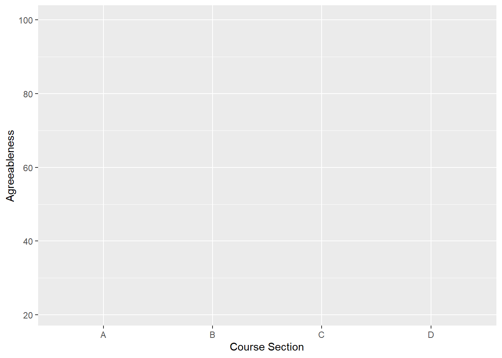
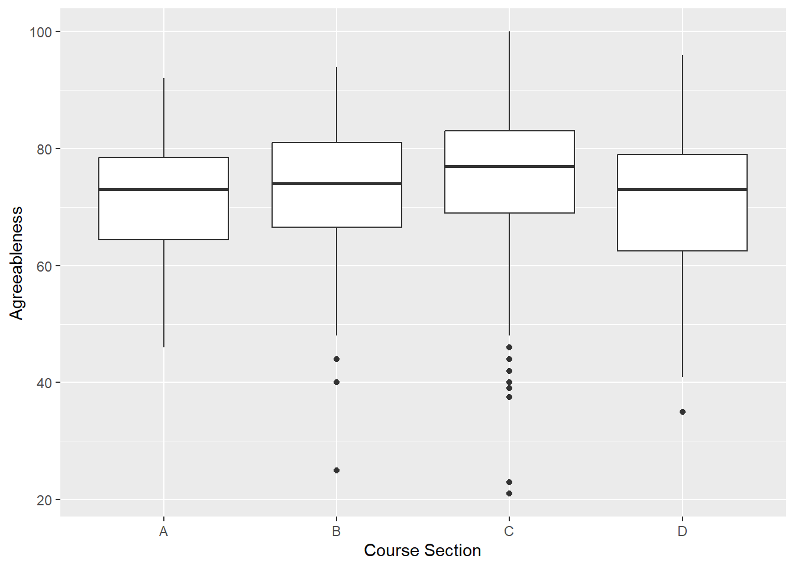
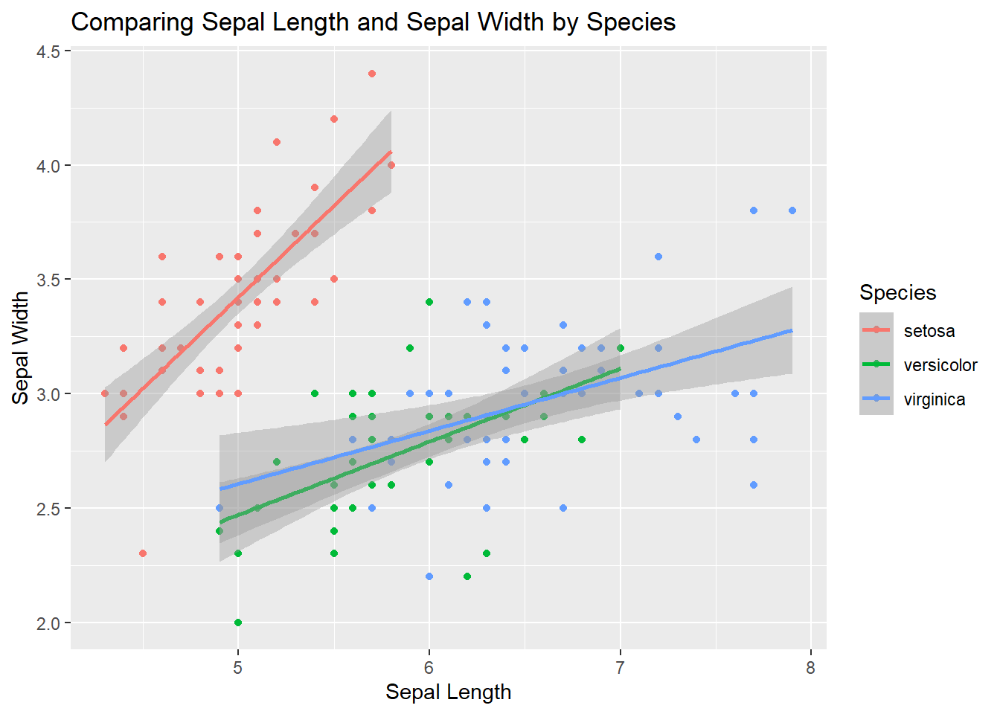
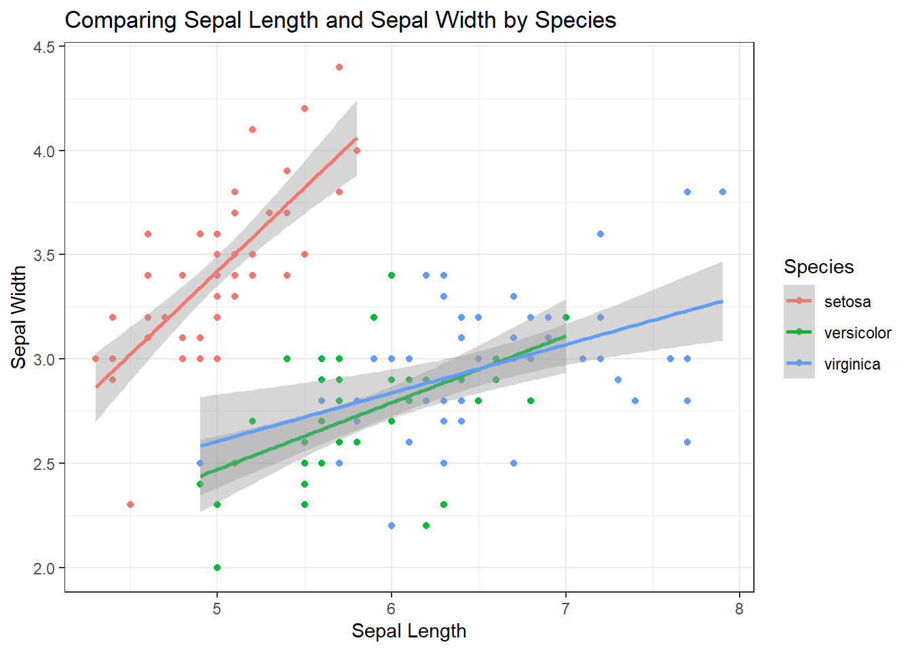
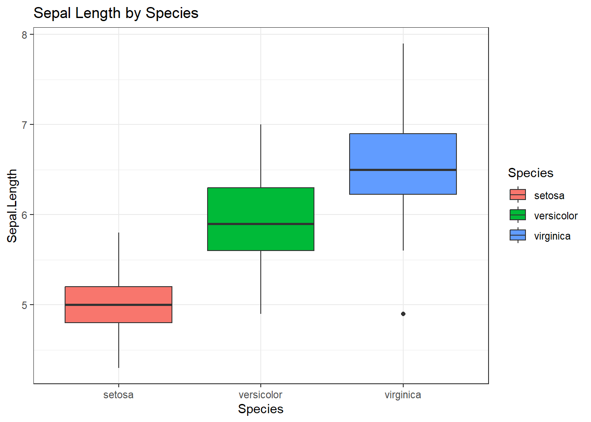
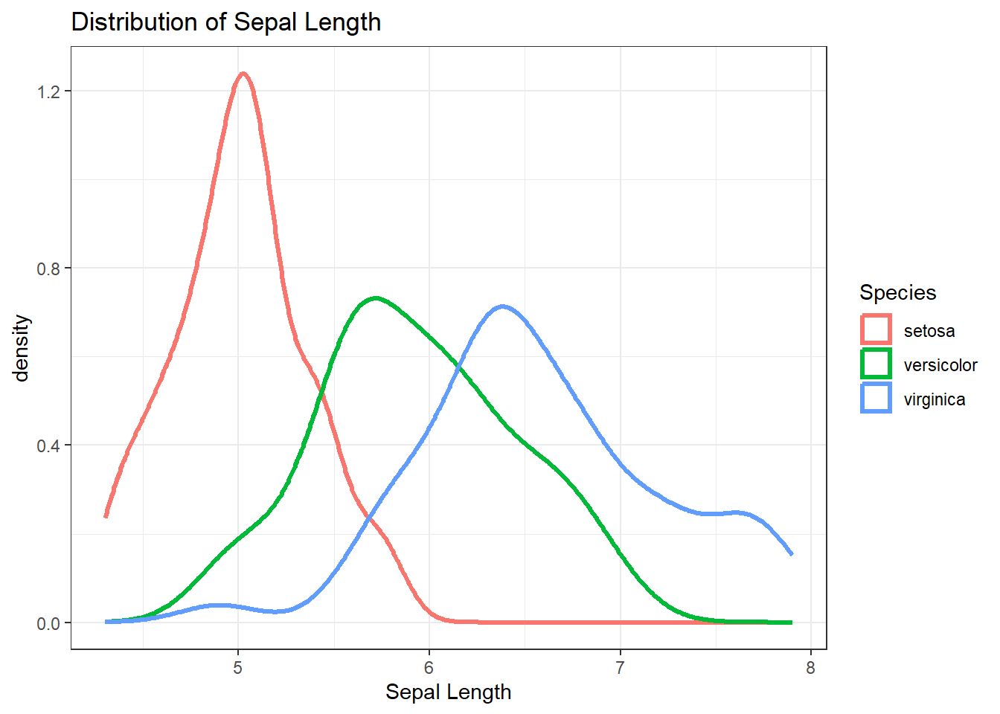
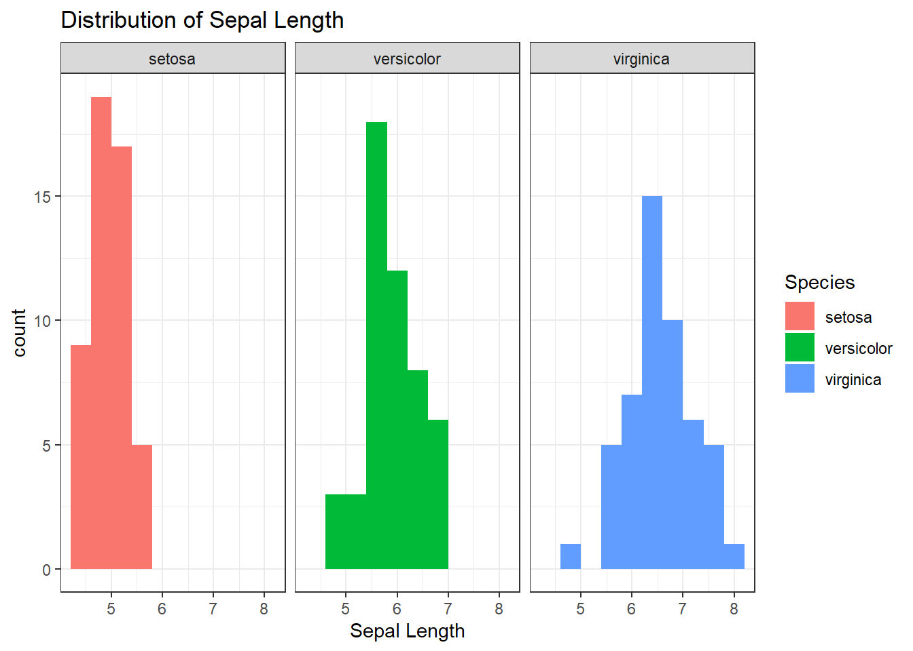
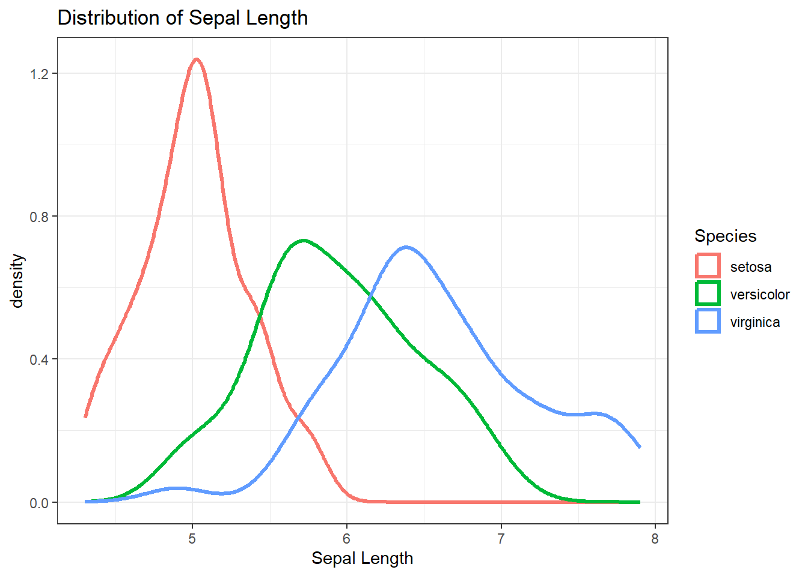

library(tidyverse)
library(mosaic)
library(rio)
library(ggplot2)
big5 <- import('https://raw.githubusercontent.com/byuistats/Math221D_Cannon/master/Data/All_class_combined_personality_data.csv')Introducing GGPlot!
A Better Way to Visualize Data
Introduction
GGPlot is a data visualization library that follows Leland Wilkinson’s Grammar of Graphics. The Grammar of Graphics is a systematic approach to how we think about connecting raw data to visual elements.
Think about a basic sentence in English: The boy threw the ball. This sentence has a subject (the boy), a verb (threw), and a direct object (the ball). While not all sentences include every part of speech, virtually all sentences have at least a subject and a verb.
The grammar of graphics has 3 essential components of distinct graphical elements that are needed to make basic “sentences.” They are like the subjects and verbs of English sentences. These elements are:
- Data layer
- Aesthetic mappings
- Geometry layers
The data layer identifies the data we wish to express visually.
The Aesthetic Mapping is a description of how we map specific data elements to specific chart elements. For example, what variable in the data do we want expressed on the X axis or Y axis. We can also map a data variable to the color element.
Lastly, the Geometry Layer tells the computer how to express those Aesthetic Mappings, such as a scatter plot, boxplot, bar chart, etc.
As in English, we can make more complex sentences with other graphical elements, but the three mentioned above will be common to all.
This sounds more complicated than it is in practice. So let’s look at a familiar example: the Personality data.
Your First ggplot
Brother Cannon has taught all the different types of sections offered for introductory statistics. Recall that Section A refers to Business Stats, B to Biostats, C is Social Science Stats, and D is Intro to Stats using R.
HYPOTHESIS: These self-selecting groups have different distributions of personality traits.
Let’s create a side-by-side boxplot of Agreeableness for each Math 221 Course Section Type.
The first argument in the ggplot() function is the data layer:
ggplot(data = big5)
Running this line of code by itself opens a blank graph because we gave it a data layer and no additional instruction. We need to tell R what columns in that data we would like to use. That requires including the aesthetic mapping layer.
The generic code is: ggplot(data = big5, mapping = aes()). We then define which columns to use for what chart elements inside the parentheses of the aes() argument.
ggplot(data = big5, mapping = aes(x = `Course Section`, y = Agreeableness))
The above code contains the data layer and the aesthetic mapping layer but does not yet have the geometry layer which tells R how to express the defined x and y data variables.
To get a boxplot, we add a the boxplot geometry, geom_boxplot():
# GGPlot Boxplot
ggplot(data = big5, mapping = aes(x = `Course Section`, y = Agreeableness)) +
geom_boxplot()
Et voila! A very basic boxplot using the fundamental layers of the grammar of graphics.
Compare this to the base R version:
# Base R Boxplot
boxplot(big5$Agreeableness ~ big5$`Course Section`)
The benefits of the grammar of graphics may not be immediately apparent when comparing side-by-side boxplots. However, ggplot() makes it astonishingly easy to create varieties of presentation-ready visualizations and provides customization capabilities that are difficult to achieve in base R. We will introduce some of these gradually throughout the semester.
NOTE: There are countless types of geometries to play with in R. They all have the form geom_. If you start typing geom_ a drop-down list appears that you can scroll through and see the possibilities.
To illustrate how to use the same framework for a completely different graph, let’s look at a graph you may not have created in class yet.
Your First Scatterplot
Scatterplots are a great way to visualize the relationship between 2 quantitative variables.
The iris dataset is included in base R and contains information on various flower measurements for different species of irises.
Let’s plot Sepel.Length and Sepal.Width using ggplot(). The geometry related to plotting points on a graph (as opposed to boxes or bars) is geom_point() which expresses the data elements as points.
ggplot(data = iris, mapping = aes(x = Sepal.Length, y = Sepal.Width)) +
geom_point()
Adding Color
To see the relationship between sepal length and width for each species separately, map the column Species onto the color element in the aesthetic mapping.
Because Species is a variable inside the dataset, we put it INSIDE the aes(). This maps Species onto the chart element, color.
ggplot(data = iris, mapping = aes(x = Sepal.Length, y = Sepal.Width, color = Species)) +
geom_point()
To change ALL the points to a single color, include a “color” statement in the geometry layer:
ggplot(data = iris, mapping = aes(x = Sepal.Length, y = Sepal.Width)) +
geom_point(color = "purple")
More Additions
It is easy to make more interesting graphs that combine multiple geometries or even multiple data layers. For example, if I want to include a trend line on top of the points, simply add a new geometry. The geom_smooth() geometry can add different types of trend lines. We can specify method = 'lm' meaning “linear model” to get a simple line.
ggplot(data = iris, mapping = aes(x = Sepal.Length, y = Sepal.Width, color = Species)) +
geom_point() +
geom_smooth(method = "lm")
Further Customizations
Without changing the underlying “grammar” we can change the “font,” so to speak. To modify the axis labels or add a title and a subtitle, use a labs() layer.
ggplot(data = iris, mapping = aes(x = Sepal.Length, y = Sepal.Width, color = Species)) +
geom_point() +
geom_smooth(method = "lm") +
labs(
x = "Sepal Length",
y = "Sepal Width",
title = "Comparing Sepal Length and Sepal Width by Species"
)
Themes
An easy way to change many visual elements all at once, ggplot() has several pre-packaged themes() you can add to a plot.
We typically want high contrast between data points and the background. This makes it easier to perceive differences. Changing the theme of the chart can make lots of changes all at once. theme_bw() is a useful theme which drops the gray default background.
ggplot(iris, mapping = aes(x = Sepal.Length, y = Sepal.Width, color = Species)) +
geom_point() +
geom_smooth(method = "lm") +
labs(
x = "Sepal Length",
y = "Sepal Width",
title = "Comparing Sepal Length and Sepal Width by Species"
) +
theme_bw()
There are more themes to try. If you begin typing theme_ you will see a drop down with several other themes.
Explore some of the themes. Who can come up with the wildest visualization?
Facets
Sometimes adding more things to a graph makes it too cluttered. When dealing with multiple groups, you may want to split the graph into several panels, one for each group.
Facets allow us to split a graph up based on a variable in the data. For example, if we wanted a separate regression plot for each species, we could “add” a facet:
ggplot(iris, mapping = aes(x = Sepal.Length, y = Sepal.Width, color = Species)) +
geom_point() +
facet_grid(~Species) +
geom_smooth(method = "lm") +
labs(
x = "Sepal Length",
y = "Sepal Width",
title = "Comparing Sepal Length and Sepal Width by Species"
) +
theme_bw()
Notice that the x-axes are the same for each group by default. That is often how we want to visualize data. Sometimes, though, we want to have each graph only cover the range of the data. We can allow the x and y axes to accommodate different ranges of data by setting the “scales” parameter inside the facet_grid to “free”:
ggplot(iris, mapping = aes(x = Sepal.Length, y = Sepal.Width, color = Species)) +
geom_point() +
facet_grid(~Species, scales = "free") +
geom_smooth(method = "lm") +
labs(
x = "Sepal Length",
y = "Sepal Width",
title = "Comparing Sepal Length and Sepal Width by Species"
) +
theme_bw()
NOTE: When we want to “add” something to a graph, we simply include a + and tell it what we want to add. If we want to learn more about any of the graphing elements and their customization, we can always use the question mark help prompts (eg. ?facet_grid).
Your Turn
Create a side-by-side boxplot using the iris dataset that looks at the distribution of Sepal.Length for each species type.
Be sure to:
1. Color the boxes by Species 2. Add theme_bw() to make the chart more high contrast 3. Add a title Sepal Length by Species
NOTE: Using color = Species with boxplots doesn’t look great. Try fill = Species instead. Using BOTH is not a good idea, but different combinations and see.
ggplot() + Error: <text>:5:0: unexpected end of input
3:
4:
^Conclusion
GGplot provides many options for easily making complex visualizations. While there is far too much to cover in one lesson, the basic framework is fairly intuitive once you get the hang of it.
More Examples
Let’s look at a few more examples.
Histograms and Density Plots
When we want to look at the distribution of a single variable, we typically use histograms. Because this is a single variable, we only define an x without a y.
ggplot(iris, mapping = aes(x = Sepal.Length)) +
geom_histogram() +
theme_bw() +
labs(
title = "Distribution of Sepal Length",
x = "Sepal Length"
)
# We can modify the number of bins in a histogram: Play around with the "bin" Parameter
ggplot(iris, mapping = aes(x = Sepal.Length)) +
geom_histogram(bins = 20) +
theme_bw() +
labs(
title = "Distribution of Sepal Length",
x = "Sepal Length"
)
The above histogram includes data from all species. We can distinguish species in several ways. One is to color the bars by species. Compare the difference between “color=Species” and “fill=Species” inside the aesthetic.
WARNING: Would not recommend:
ggplot(iris, mapping = aes(x = Sepal.Length, fill=Species)) +
geom_histogram(bins = 20) +
theme_bw() +
labs(
title = "Distribution of Sepal Length",
x = "Sepal Length"
)
It’s not usually a good idea to layer histograms like this because it can obscure what is happening behind the covered layers. This is a situation where faceting can be useful.
Recall that by default the x-axis will be fixed to the same values for each facet. We can let the x axis scale be different for each group by including scales = "free" into the facet_grid argument as above.
Try both and see which tells a more compelling story:
ggplot(iris, mapping = aes(x = Sepal.Length, fill = Species)) +
geom_histogram(bins = 10) +
facet_grid(~Species) +
#facet_grid(~Species, scales = "free") +
theme_bw() +
labs(
title = "Distribution of Sepal Length",
x = "Sepal Length"
)
A Better Histogram
While histograms are a fine way to express the distribution of quantitative variables, it is not the only way. A Density plot is a smooth version of a histogram. Density plots use data to calculate a smooth line that expresses the quantitative variable as a continuous value rather than using crude bins.
By making the smooth line, it is much easier to compare between groups on the same plot:
ggplot(iris, mapping = aes(x = Sepal.Length, color = Species)) +
geom_density(linewidth = 1.2) +
theme_bw() +
labs(
title = "Distribution of Sepal Length",
x = "Sepal Length"
)